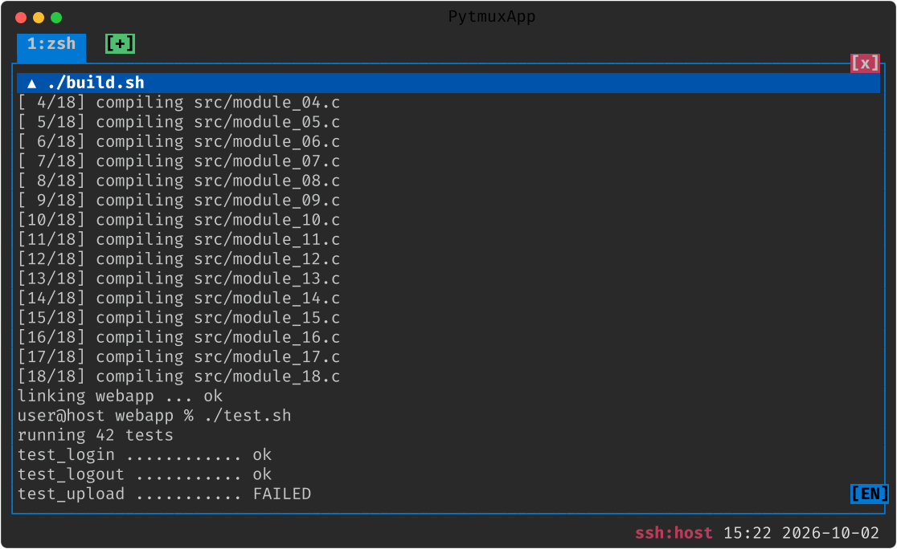
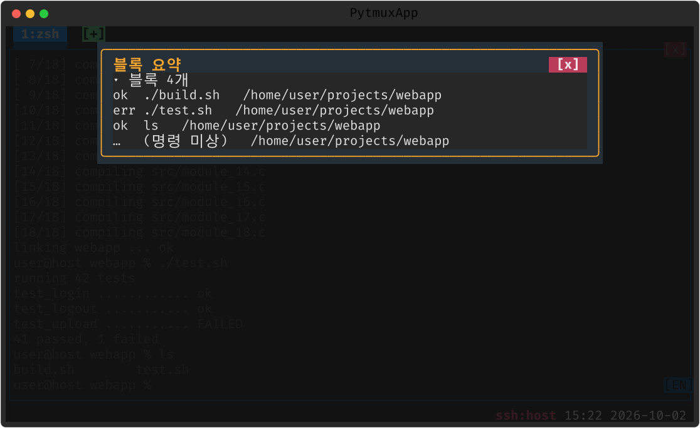

blocks
셸이 알려 주는 신호를 받아 “어디부터 어디까지가 한 명령인가”를 알아냅니다 — 명령마다 시작·끝 위치, 종료 코드, 그때의 작업 디렉토리, 그리고 사용자가 친 명령 문구까지.
블록 고르기
모은 블록으로 명령 하나와 그 출력을 한 덩이로 골라 복사합니다.
파이썬 클라이언트와 GUI 클라이언트(pytmux-gui) 모두 접속할 때 “나는 블록을 그린다”고 밝혀 블록 정보를 받습니다
— 그렇게 밝히지 않은 클라이언트에는 서버가 블록 프레임을 한 바이트도 보내지 않습니다.
| 입구 · 키 | 동작 |
|---|---|
select-blocks · ESC b | 블록 고르기 모드로 — 첫 선택은 마지막 블록(방금 친 명령), 상태줄에 [block] 배지 |
| ↑ / ↓ | 이전 / 다음(더 최근) 블록 — 고른 블록은 반전으로 강조 |
| Ctrl+C | 고른 블록 전체(명령 + 출력)를 복사 — 드래그 복사와 같은 경로 |
| Esc · q · Enter | 모드 끝내기 |
모드 중에 친 그 밖의 키는 패널로 흘러가지 않습니다. 블록이 하나도 없는 패널에서는 모드에 들어가지 않고 이유를 알려 줍니다. Claude 패널은 셸 신호 대신 화면의 프롬프트 표시로 경계를 잡아(claude-code 플러그인) 턴 단위로 골라집니다.
스티키 프롬프트 바 — 지금 보는 출력의 명령
위로 굴려 지난 출력을 보고 있으면, 패널 첫 줄에 그 출력을 낸 명령이 ▲ 명령 띠로 붙습니다.
띠를 누르면 그 명령의 프롬프트 줄이 패널 첫 줄에 오도록 스크롤합니다 — 긴 출력 한가운데서 「이게 무슨 명령의 출력이었지」를
위로 한참 굴려 찾지 않아도 됩니다. Claude 패널에서는 턴이 블록이라, 답을 읽는 동안 그 답을 끌어낸 프롬프트가 띠에 붙습니다.
- 맨 아래(라이브)로 돌아오면 띠가 사라집니다.
- 패널 첫 줄이 곧 그 명령의 프롬프트 줄이면 띠를 세우지 않습니다 — 같은 줄이 두 번 보이지 않게.
- 블록 고르기 모드와 무관하게, 굴린 상태이기만 하면 섭니다.
어느 줄에 띠를 세울지는 규칙 한 벌이 정하고, 파이썬 클라이언트와 GUI 클라이언트가 같은 사례 표로 같은 답을 내는지 시험이 맞대어 봅니다. 그 맞대기가 기존 결함도 하나 잡았습니다 — 파이썬 클라이언트에서 블록을 고르면 다음 명령의 프롬프트 줄까지 한 줄이 딸려 강조·복사되던 것을 이번에 바로잡았습니다.

▲ ./build.sh 가 지금 보는 컴파일 출력의 명령입니다(파이썬 클라이언트)../build.sh 같은) 그 글자 위를 눌렀을 때
스크롤 대신 경로가 복사됩니다 — 경로 밑줄을 먼저 처리하기 때문입니다. 고칠 때까지는 띠의 빈 자리를 누르세요.
GUI 클라이언트는 띠를 먼저 처리해 이 문제가 없습니다.
블록 요약 판 — summary
summary 는 활성 패널의 블록을 한 판에 목록으로 보여 줍니다. 블록마다 한 줄 —
결과 표식 · 명령 · 그때의 작업 디렉토리 — 이고, 오래된 것이 위에 섭니다. ↑↓ 로 굴리고
아무 키나 누르면 닫힙니다. 블록이 없는 패널에서는 판 대신 이유를 한 줄로 알려 줍니다.
GUI 클라이언트에만 있던 판을 이번에 파이썬 클라이언트에도 들여, 두 클라이언트가 같은 표식을 씁니다.
| 표식 | 뜻 |
|---|---|
ok | 끝났고 종료 코드 0 |
err | 끝났고 종료 코드가 0 이 아님 |
?? | 끝났지만 종료 코드를 받지 못함 |
··· | 아직 실행 중 |
❯ | Claude 턴 |
… | 그 밖(예: 지금 떠 있는 프롬프트 — 「명령 미상」) |

ok, 실패한 시험은 err. 마지막 줄은 지금 떠 있는 프롬프트입니다(파이썬 클라이언트).셸 통합 설치
안 깔아도 아무것도 깨지지 않습니다 — 블록이 안 생길 뿐입니다.
쓰는 규약은 OSC 133 시맨틱 프롬프트로, iTerm2 가 만들고 kitty · WezTerm · VS Code 가 따르는
사실상 표준입니다. 그래서 같은 설정을 다른 터미널에서 써도 문제가 없습니다.
bash · zsh
PowerShell (Windows)
스크립트는 pytmuxlib/plugins/blocks/ 안에 있습니다
(shell-integration.sh · shell-integration.ps1).
PowerShell 판은 기존 prompt 함수와 PSReadLine 편집·히스토리를 덮지 않고 감싸므로,
쓰던 프롬프트가 그대로 유지됩니다. 두 판 모두 같은 신호를 보내 서버 쪽에는 셸별 분기가 없습니다.
셸이 보내는 신호
| 신호 | 뜻 |
|---|---|
OSC 133 ; A / B | 프롬프트 시작 / 명령 입력 시작 |
OSC 133 ; C | 명령 실행 시작(여기부터 출력) |
OSC 133 ; D ; <종료코드> | 명령 끝 — 성공·실패가 여기서 갈립니다 |
OSC 7 | 그 시점의 작업 디렉토리(Windows 드라이브 경로 포함) |
OSC 633 ; E | 사용자가 친 명령 문구 그대로(VS Code 셸 통합과 같은 확장) |
경계는 서버가 판정합니다 — 클라이언트마다 따로 추정하면 서로 다른 블록을 보게 되기 때문입니다. 위치는 화면이 아니라 스크롤백 절대 행으로 잡아, 스크롤해도 블록이 따라 움직이지 않습니다.
끄기 · 제거
:plugins 관리 팝업에서 끄거나(가역), pytmuxlib/plugins/blocks/
디렉토리를 지우면(delete-to-disable) 조용히 사라집니다. 셸 쪽 설정만 남아 있어도 무해합니다 —
다른 터미널이 같은 신호를 이해하기 때문입니다. ← 플러그인 개요